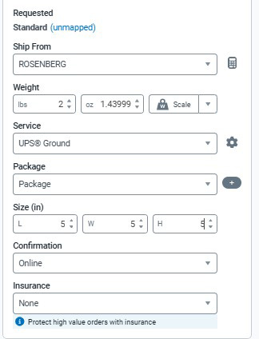

Return Merchandise Agreements
The Return Merchandise Agreement (RMA) is a critical part of the return
process, because it is what brings the item back to us for inspection.
Soon we will begin a two-month trial program that will not require the
customer to return their item. Instead we will ask them the email a
video of the bag in a destroyed state. This insures the bag is no longer
in sellable condition, and allows use to reduce the overhead cost of
shipping the item back to the warehouse.
We can accept any item from return, however only damaged or defected
items can be returned without a restocking fee. Below are some examples
of returns that would encounter a restocking fee:
- Customer changed their mind about the purchase
- Item does not fit as expected*
- Customer found a better price elsewhere
- Customer ordered the wrong item*
- Customer no longer needs the item*
- Item is not compatible with other products*
- Customer did not like the color or style*
-
Customer purchased multiple items to compare and decided to return
some
*These returns might qualify for a restocking fee waiver. Ask a
supervisor to review the request.
Creating an RMA in ShipStation
First, you will need to locate the order in ShipStation, it is always
best to use the ADN number as it is automatically included in the
shipment notes, you may also use the customer's email address to locate
the order. Once you have found the order follow the steps below:
Once you have located and opened the order, click on the Returns
icon in the left-side menu. Here you can see it shows 0 Returns
for this order.
This will open the RETURNS screen. Click on the "+" icon to create
a new return. This will open a screen that contains the items
shipped out for the order. Only items that have shipped can be
processed for an RMA. Lost shipments are not processed under the
RMA system. Only items that the customer has received and no
longer want can receive an RMA.
Now you will place a check in the box next to the item being
return. If there are multiple items, use the "Find" feature of
your browser to search for the SKU number. Once you have select
the item, be sure to select the correct quantity. ShipStation
defaults to returning all the items shipped. Then you will pick
your reason for the return. Once you are finished click "Continue"
at the bottom right of the screen.
Complete the shipping method for the return, typically using UPS
Ground. Provide a Return Note in the Shipping Method screen,
including the Order Number, action requested, and any necessary
notes. Remember, the customer will see these notes. Select the
shipping method, then click 'Download Label' and 'Create Label' to
generate a return label. Email the label to the customer using the
RMA Snippet in the email system. Include the RMA number provided
by the system in the RMA Notification email.
